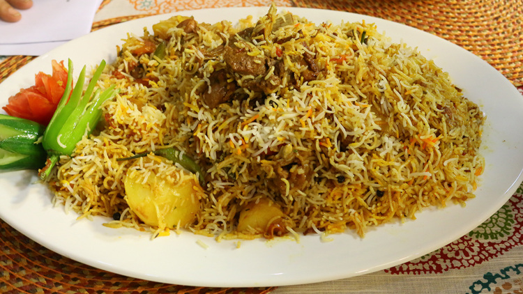

Sindhi biryani is a dish that originated in Sindh province of Pakistan, hence the name. It is a type of pakki biryani. It is also one of the most beloved dishes of Pakistan and an integral part of the Sindhi cuisine. Sindhi biryani consists of meat and a mixture of basmati rice, onion-tomato paste, yogurt, potatoes, fresh mint, and coriander leaves along with various spices. This type of biryani also includes a generous amount of dried plums and green chilies which gives it a sour and spicy tinge. Rice of Sindhi biryani is a combination of bright yellow and white due to the use of yellow food coloring.
Back to Home